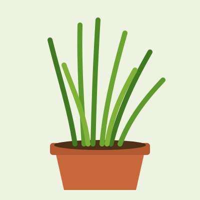
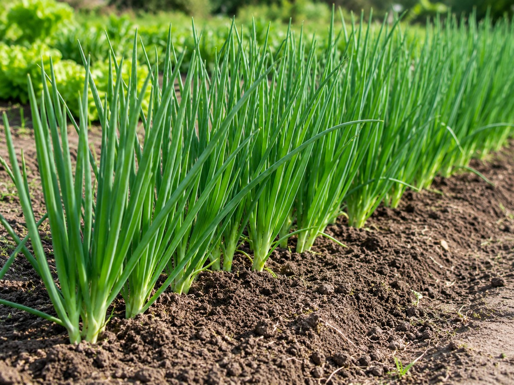

Ficha rápida
Tempero
- Luz
- Sol pleno ou meia-sombra, com pelo menos 4 horas de sol.
- Água
- Solo úmido. Não deixe secar por muitos dias.
- Espaçamento
- 20 a 30 cm entre touceiras.
- Clima
- Aguenta bem calor e frio moderados.
- Como plantar
- Divisão de touceiras ou mudas. Também nasce de sementes.
- Colheita
- Primeiros cortes cerca de 2 a 3 meses depois do plantio.


Imagem ilustrativa gerada por IA.imagens/cebolinha.jpg no lugar desta.Como plantar
- Separe uma touceira em pedaços, cada um com algumas hastes e raízes.
- Corte as pontas das folhas, deixando uns 10 cm, para a muda gastar energia nas raízes.
- Plante cada pedaço em uma cova rasa, deixando 20 a 30 cm entre eles.
- Regue e mantenha úmido nas primeiras semanas.
Cuidados
- Regar com regularidade.
- Espalhar um pouco de composto orgânico ao redor das plantas de tempos em tempos.
- Dividir a touceira quando ficar muito cheia.
- Cortar as hastes de flor, para a planta continuar dando folhas.
Colheita
Corte as folhas a uns 3 a 5 cm do chão, começando pelas de fora. A planta rebrota e pode ser colhida de novo.
Só corte rente à terra quando a touceira estiver bem formada. Cortes muito seguidos enfraquecem a planta.
Informações gerais de referência. Datas e tempos mudam com a região, a estação e a variedade.